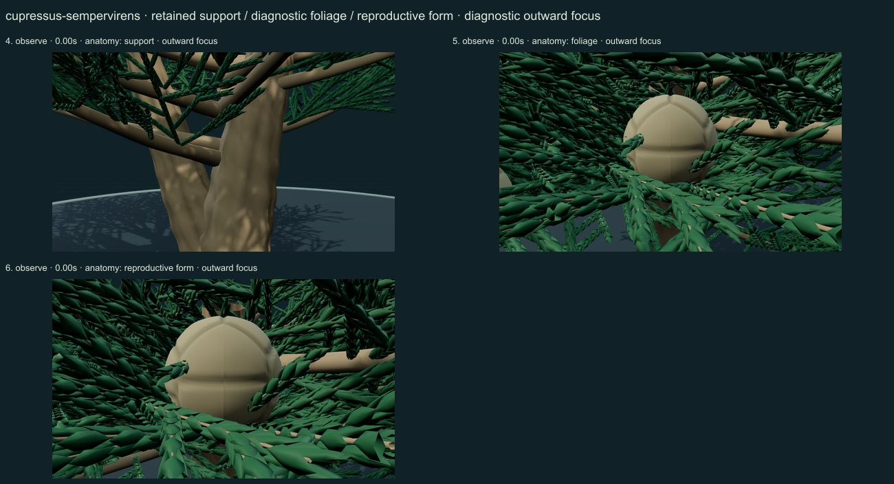
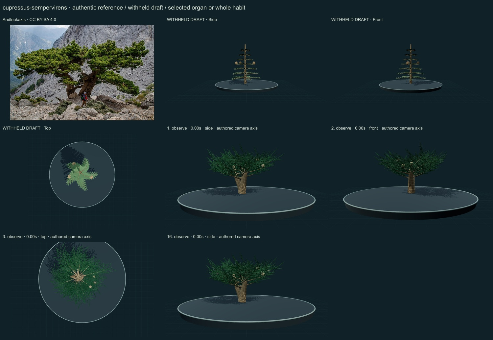
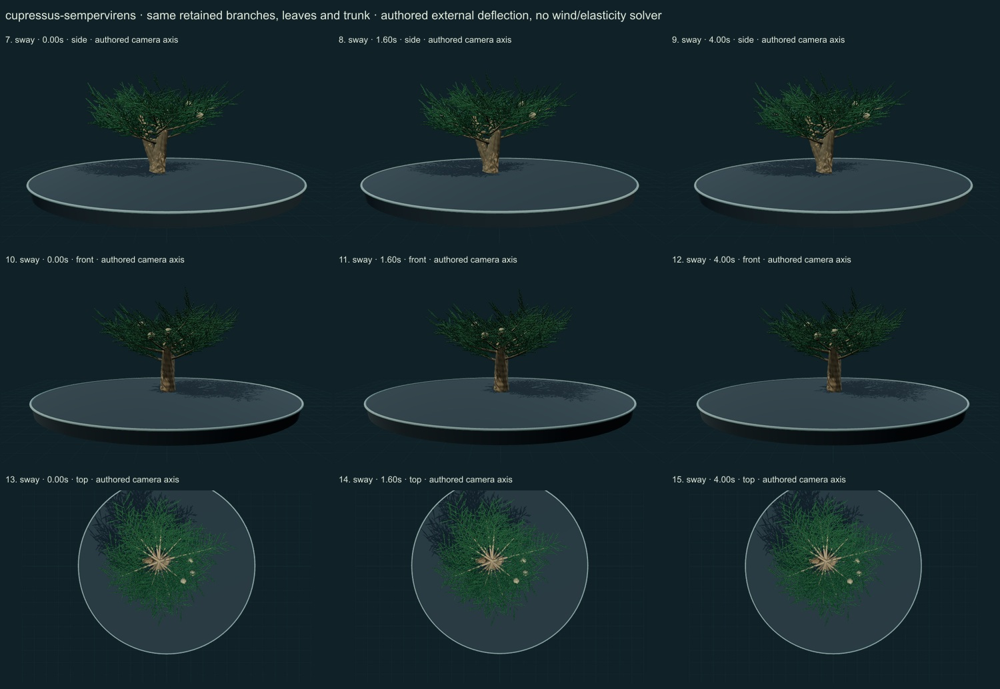

PhenoVoxel Archive · v0.6.24 · October 25, 2026
Mediterranean cypress
285 records after verified publication. 15 saved drafts remain held; 265 remain to 550, including 250 without a saved draft. Release register.
Selected Flora of China species diagnosis through web retrieval; adult leaf, shoot and reproductive descriptions inform selected morphology, not numerical dynamics. Direct local HTML failed; no local full-text reading claimed.
Andloukakis · CC BY-SA 4.0. Source-labelled real organism reference; preparation, life-stage, location and selected phenotype do not establish all species variation or measured 3D anatomy. Resized inside 1000 px, flattened and JPEG encoded; no generative alteration.
Exact creator, license, source/download/local checksums and access scopes remain in the data. Additional copyrighted institutional photographs and primary figures were consulted privately and linked, not redistributed or sampled into materials.
A selected spreading cypress has a forked irregular lower trunk, broad branch groups and nonplanar ultimate shoots clothed in small appressed scale leaves in four ranks; selected compact woody seed cones carry shield-like scale cues.
Original numerical connected woody/green axes, individual curved leaf surfaces, subdued pigment variation and selected reproductive surfaces. No source photograph pixels or measured tissue optical parameters.
Remaining: Crown outline, branching and bark remain simplified and too regular; leaf scales are coarse at close range and woody shield relief is shallow. Exact scale counts vary in nature; this selected number is not a measured individual. Some foliage overlaps cone landmarks. Natural optics, cultivar/age variation and cone opening are incomplete.
Same retained woody axes, rachises, leaves and reproductive surfaces during small authored external deflection. Root/support position and scale remain anchored. Timing and angles are qualitative; there is no wind/elasticity solver, physiological simulation or measured biomechanics. Complete germination, organ emergence and seed-to-adult development are unavailable; no resizing of a ready mature plant.
Partly stylized original educational reconstructions. Fine morphology, age variation, tissue optics, dimensions and environmental mechanics remain incomplete or unmeasured. No independent specialist validation, scientific certification or accuracy percentage. Software checks and screenshots do not establish biological validity.
16 actual nonblank final viewer states inspected on 3 labelled sheets. Side/front/top are authored whole-habit or selected-organ camera axes; outward focus is a separate diagnostic view. Qualitative author review, not independent scientific certification.



Partly stylized original educational reconstructions. Fine morphology, age variation, tissue optics, dimensions and environmental mechanics remain incomplete or unmeasured. No independent specialist validation, scientific certification or accuracy percentage. Software checks and screenshots do not establish biological validity. Prior 274 species objects and original wolf/tiger meshes unchanged. Occurrences and cultivated accessions are not native-range boundaries. Legacy Protista/Monera are reporting conveniences.
Exact findings, sources and screenshot hashes